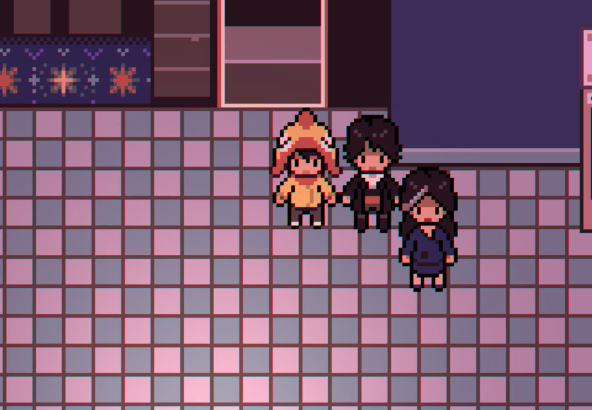
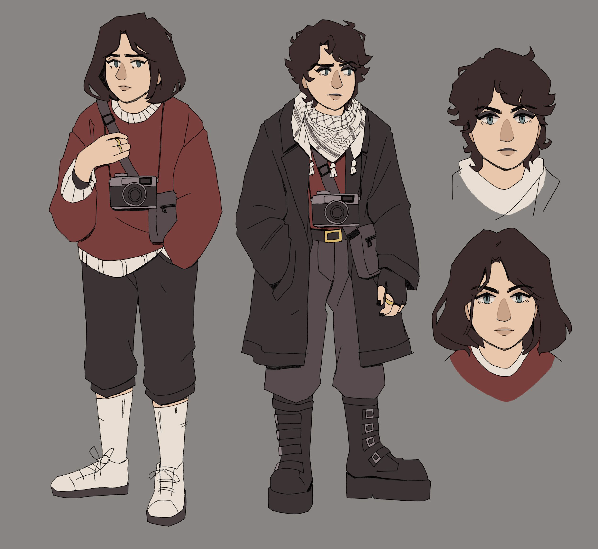
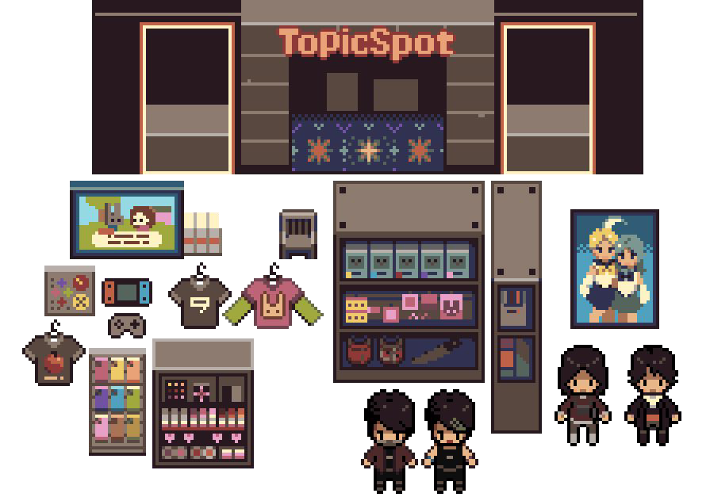
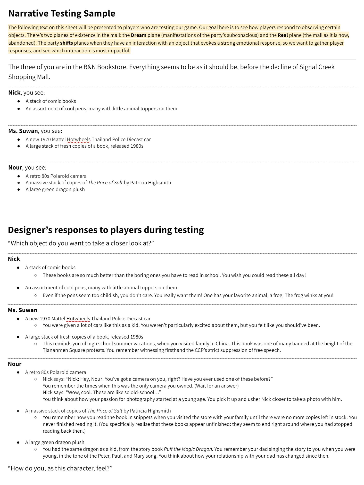

Hi! This is an overview of the year long Capstone Project Iʼm currently working on at NYU Game Center.
Itʼs a narrative-focused pixel art RPG.
Iʼm part of the Art team, as well as being the primary programmer & project manager.
Weʼre a team of 5 designers, and we all work together on story development, narrative design, and game writing.
Our three main characters are in the Signal Creek Shopping Mall, which has served the town of Signal Creek, NJ for 30 years.
The mall, now in a state of near-disrepair, was built on former chemical-dumping grounds. Negotiations for its demolition are underway.
Our three protagonists have returned to the mall from their pasts, seeking closure for their deepest unresolved struggles.
Theyʼre brought together by a strange phenomenon: they have been transposed into a parallel dimension, a version of the mall that manifests their memories and subconscious desires.

Nour's Character Design
The Signal Creek team came up with our protagonistsʼ personalities and backstories as a group, and we drew from our personal experiences when designing them.
Each protagonist has a real self and a dream self.
I designed the appearance of Nour, using her backstory and personality to inform my choices. My process involved asking myself questions like:
- how does Nour get ready for the day?
- What does styling her hair mean to her?
- What does she want to express with her clothing choices?

Software Design
Weʼre using Godot Engine (mono) which uses C# and GDScript
For narrative systems, weʼre using Ink by Inklestudios.
As primary programmer, I designed systems for object placement and appearance changes between the dream and real worlds.
Iʼve also designed the system that connects the Ink backend with our Godot project and game UI.
The repository can be found here.
Some of my pixel art!

Paper prototype: narrative playtest sample
I designed this playtest and helped to conduct it in-person; it followed a TTRPG format.
Our goal was to see how players feel when embodying our characters; we were able to learn a lot about what players want to know more this way!
